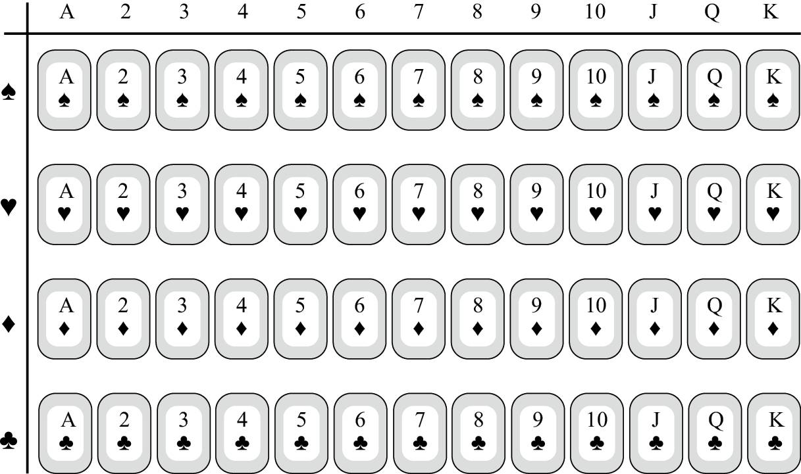

从本质上看，计数问题大多涉及两个法则，即加法法则和乘法法则。在存在多种不同类型选择的情况下，计算可选方案的总数，需要使用加法法则。例如，如果你有3件短袖衬衫和5件长袖衬衫，那么在考虑穿哪件衬衫时，你一共有8种不同的选择。一般而言，如果你的可选对象分为两种，第一种对象包含a个选择方案，第二种对象包含b个选择方案，那么你在这两种对象中做出选择时一共有a + b个方案（假设a、b两种选择方案各不相同）。
如前所述，加法法则假设这两种对象彼此不同。但是，如果有c个对象同时属于这两个类型，这些对象就会被统计两次。因此，不同对象的个数应该是 a + b – c。例如，在一个班级中，有12名学生养狗，19名学生养猫，还有7名学生既养狗又养猫，那么养宠物的学生总数应该是12 + 19 – 7 = 24。再举一个数学味儿更浓的例子。在从1到100的数字中，2的倍数有50个，3的倍数有33个，既是2又是3的倍数（即6的倍数）的数字有16个。那么，在从1到100的数字中，是2或者3的倍数的数字一共有50 + 33 – 16 = 67个。
乘法法则的意思是：如果某项活动由两个部分构成，完成第一部分的方法有a个，完成第二部分的方法有b个，那么完成整个活动共有a×b个方法。例如，我有5条裤子和8件衬衫，而且我不关心颜色搭配（我想，学数学的人大多如此），那么我一共有5×8 = 40个不同的搭配方案。如果我有10条领带，那么衬衫、裤子加领带的搭配方案共有40×10 = 400个。
一副普通的扑克牌（不含大小王）有4个花色（黑桃、红心、方块和梅花）、13种牌值（A，2，3，4，5，6，7，8，9，10，J，Q和K），每张牌只能有一个花色和一种牌值。因此，一副牌（不含大小王）共有4×13 = 52张。我们也可以把全部的52张牌排列成一个4×13的长方形，如下图所示，从中也可以看出一副牌共有52张。

接下来，我们用乘法法则计算邮政编码的个数。从理论上讲，一共可以有多少个五位数的邮政编码呢？邮政编码的每个数位上的数字可以从0至9中任选，因此最小的邮政编码可能是00000，最大的可能是99999，共有100 000个。根据乘法法则，我们也可以得出这个结果。第一数位上的数字有10种选择（0~9），第二、第三、第四和第五数位上的数字也各有10种选择。因此，邮政编码的个数是105 = 100 000。
在统计邮政编码的个数时，数字是可以重复出现的。现在，我们来研究对象不能重复出现的情况，比如将对象排成一行。很容易看出，两个对象有两种排列方式。例如，字母A和B可以排列成AB和BA这两种形式。3个对象有6种排列方式：ABC，ACB，BAC，BCA，CAB，CBA。假设有4个对象，在不把它们写出来的情况下，你知道它们共有24种排列方式吗？在安排第一个字母时，有4种选择（A、B、C或者D）。第一个字母确定之后，安排第二个字母时有3种选择，安排第三个字母时有2种选择，安排最后一个字母时只有一种选择。因此，一共有4×3×2×1 = 4! = 24种排列方式。一般而言，n个不同对象有 n!种排列方式。
在接下来的例子里，我们结合使用加法法则和乘法法则。假设美国某个州发放两种车牌。第一种车牌的前三位是字母，后三位是数字。第二种车牌的前两位是字母，后4位是数字。最多可以发放多少个不同的车牌呢？（尽管某些字母与数字外形相似，例如O与0，但我们不考虑这种情况，允许使用所有26个英文字母和10个数字。）根据乘法法则，第一种车牌的可能数量为：
26×26×26×10×10×10 = 17 576 000
第二种车牌的可能数量为：
26×26×10×10×10×10 = 6 760 000
由于每个车牌要么属于第一种，要么属于第二种（不可能既属于第一种又属于第二种），根据加法法则，车牌的总数是：17 576 000 + 6 760 000=24 336 000。
计数问题（数学界把这个分支称作组合数学）可以给我们带来诸多乐趣，其中之一就是我们经常发现同一个问题有多种解法。（心算问题也可以让我们体验到这种乐趣。）前面那个例子其实只需一个步骤即可完成。可发放的车牌数是：
26×26×36×10×10×10 = 24 336 000
这是因为车牌的前两位分别有26个选择，后三位各有10个选择，而第三位既可以选择字母，又可以选择数字，因此有26 + 10 = 36个选择。